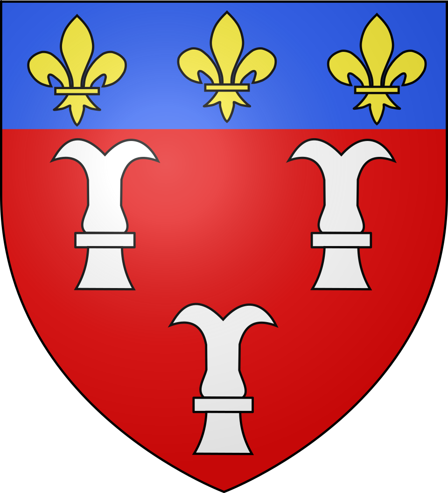

Rocamadour
la cité mariale


⟹ Sanctuaire accroché à la falaise ⟸

Bien avant que la cité mariale ne s'élève, des ermites s'étaient installés dès le VIIe siècle dans le vaste abri sous roche qui domine le canyon de l'Alzou, au cœur du Haut-Quercy. La première mention connue du culte marial remonte à 1105, lorsque le pape Pascal II confirme l'abbé de Tulle dans la possession de l'église de la Bienheureuse Vierge Marie de Rocamadour. Le pèlerinage prend alors une ampleur telle que Rocamadour devient l'un des quatre hauts lieux de la chrétienté, aux côtés de Rome, Jérusalem et Saint-Jacques-de-Compostelle.

En 1152, l'abbé Géraud d'Escorailles entreprend la construction du sanctuaire à flanc de falaise, tirant parti de la terrasse rocheuse qui abritait déjà un oratoire primitif. Sept ans plus tard, Henri II Plantagenêt vient en personne remercier la Vierge de sa guérison. En 1166, la découverte d'un corps parfaitement conservé près d'une sépulture donne naissance au culte de saint Amadour, dont les reliques reposent depuis dans la crypte qui porte son nom.
Selon le Livre des Miracles rédigé dès 1172, Notre-Dame de Rocamadour guérissait les malades, délivrait les prisonniers et protégeait les marins en péril.
— Liber miraculorum, 1172Le XIIIe siècle marque l'âge d'or de Rocamadour, devenu le plus grand pèlerinage marial d'Occident, comblé de dons par les plus grands souverains d'Europe. Classée aujourd'hui parmi les Plus Beaux Villages de France et inscrite au titre des Chemins de Saint-Jacques-de-Compostelle au patrimoine mondial de l'UNESCO, la cité continue d'accueillir chaque année pèlerins et visiteurs venus contempler son défi à l'équilibre.
Repères complémentaires : Rocamadour s’inscrit dans une tradition de pèlerinage vieille de près d’un millénaire. Le cœur religieux se découvre par paliers : la cité médiévale, le Grand Escalier, le parvis des sanctuaires, la chapelle Notre-Dame et sa Vierge Noire, la crypte Saint-Amadour et la basilique Saint-Sauveur. Les pèlerins médiévaux gravissaient les 216 marches du Grand Escalier, parfois à genoux.
Rocamadour est aussi une étape majeure des itinéraires de pèlerinage liés à Saint-Jacques-de-Compostelle. La basilique Saint-Sauveur et la crypte Saint-Amadour figurent parmi les monuments associés au bien UNESCO « Chemins de Saint-Jacques-de-Compostelle en France ». Cette dimension permet de replacer la cité dans un réseau européen de circulation religieuse, culturelle et artistique.
Le petit palet de fromage de chèvre au lait cru qui porte le nom du village bénéficie d'une appellation d'origine contrôlée depuis 1996, devenue AOP en 2000. Produit dans un vaste territoire du Quercy et du Périgord, le Rocamadour se déguste aussi bien frais, sur une salade tiède, que légèrement affiné ou même chaud, en toast doré au four — une tradition culinaire qui accompagne depuis toujours l'accueil des pèlerins de passage.
Fête de l'Assomption : le 14 août, une procession mariale aux flambeaux part de l'Hospitalet jusqu'à la basilique Saint-Sauveur pour la messe de la vigile.
Cantica Sacra : chaque année au mois d'août, ce festival de musique sacrée résonne dans les sanctuaires et l'ensemble du village.
Les Montgolfiades : le dernier week-end de septembre, un rassemblement européen de montgolfières colore le ciel au-dessus du canyon de l'Alzou.
Alentours : le gouffre de Padirac, à une dizaine de kilomètres, et la vallée de la Dordogne complètent idéalement une découverte du Haut-Quercy.
Meilleure période : le printemps et l'automne pour une visite plus sereine, ou la mi-août pour vivre la fête de l'Assomption et Cantica Sacra.
Accès : la cité se visite à pied depuis la vallée ou depuis le plateau de l'Hospitalet, relié par un ascenseur incliné et une navette.
Se loger : hôtels et auberges dans la cité médiévale et sur le plateau de l'Hospitalet ; l'office de tourisme renseigne sur les horaires de messes et les visites guidées.
Documentation : Vallée de la Dordogne — Rocamadour et les Plus Beaux Villages de France. Cette source officielle permet de compléter la fiche avec les informations de visite et les actualisations pratiques.